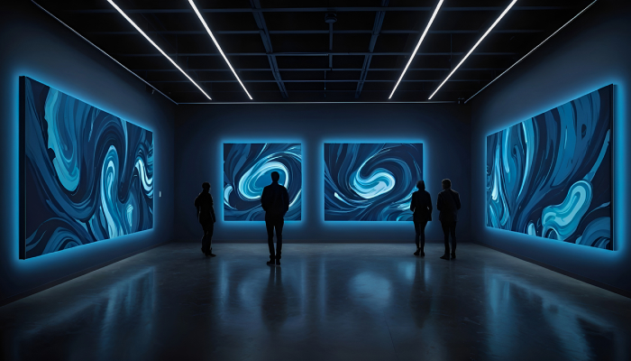

home > 전시체험관 > 곤충생태체험관
곤충 생태 체험관
저희 예천군곤충연구소의 곤충생태체험관은 연면적 2,374m², 4층 건물로서, 관리실, 사무실, 전시실, 체험학습교실 및 연구실 등으로 이루어져 있습니다.
1 Floor
1층에는 안내데스크, 수유실, 3D영상관 및 반짝반짝 동굴 터널이 있습니다.
안내데스크에서 유모차 및 휠체어가 언제든지 대여 가능합니다.
종합안내소
- 3D 영상관
- 안내데스크
- 유모차 대여소
- 관리실
- 수유실
- 입구
입구에 들어서자마자 나무 할아버지는 관람객들을 맞이 합니다. - 3D 영상관
3D 영상관에서는 3차원(3D)영상물을 관람하실 수 있고, 영상관을 나가는 벽면에는 몬드리안 기법을 이용한 대형 나비액자가 볼거리를 제공합니다. - 반짝반짝 동굴 터널
반짝반짝 동굴 터널은 지날 때 마다 생동감 있게 움직이는 3D이미지와 LED를 사용한 다양한 영상으로 채워진 동굴입니다.
2 Floor
2층에는 제1전시실 및 제2전시실이 있습니다. 제1전시실은 '곤충학습관'으로 여러가지 매체를 통해 어린이들에게 곤충에 관한 지식을 쉽게 전달합니다.
2층 곤충학습관내 특별전시실에는 다양한 빛깔의 57종 1,153마리로 장식된 '세계의 나비관'과 149종 4,273마리의 딱정벌레가 전시되어 있습니다.
곤충학습관
- 2-1곤충의 탄생
- 2-2곤충박사
- 2-3표본실1
- 2-4표본실2
곤충생태관
- 3-1물 속 탐험
- 3-2땅 속 탐험
- 3-3숲 속 움직임
- 3-4은밀한 곤충세상
- 3-5멸종위기종 전시
- 3-6곤충을 잡자
-
- 제 1 전시실 곤충 학습관
- 곤충의 탄생을 연대기와 화석 표본을 이용해 어린이들이 이해하기 쉽게 도와준다.
- 곤충의 발성기관, 곤충의 순환계, 곤충의 호흡계 등 곤충에 관한 지식을 영상과 표본을 통하여 얻어갈 수 있는 공간입니다.
-
- 제 2 전시실 곤충생태관
- 곤충이 살아가는 다양한 환경중에서 인류 삶과 밀접하게 연관된 몇 가지 환경을 주제로 곤충이 살아가는 생태계를 소개하였습니다
- 산림생태(숲), 농업생태계(과수원, 시설재배농지, 벼재배농지), 초지생태계(풀밭), 수계(물속, 물가)생태계, 땅속생태계, 사람이 사는 주거환경 등에서 살아가는 많은 곤충들중에 일부 대표적인 것을 예로 들어 곤충서식환경을 체험학습용으로 소개하고 있습니다.
3 Floor
3층에는 제3전시실, 체험학습교실 및 어린이 도서관이 있습니다.
3층 로비에 전시된 대형 말벌집은 1개의 여왕벌방과 67,000개의 일벌, 수벌, 애벌레방을 가지고 있는 국내 최대의 말벌집 전시물입니다.
3층에서 곤충정원으로 나가는 문이 연결되어 있으며, 나가시면 곤충체험온실이 바로 옆에 있습니다.
종합안내소
- 4-1화분매개곤충
- 4-2애완, 정서 곤충
- 4-3바이오 곤충
- 4-4식약용 곤충
- 4-5생물모방
- 4-6천적곤충
- 체험학습교실
- 어린이 도서관
-
- 제 3 전시실 곤충 자원관
- 화분매개곤충, 애완 곤충, 바이오 곤충, 식ㆍ양용 곤충, 천적곤충 등의 주제를 소개하고 있습니다.
- 화분매개곤충인 호박벌과 꿀벌의 생활사를 직접 눈으로 볼 수 있으며, 침이 없는 숫벌을 직접 만져볼 수 있는 특별한 경험을 가질 수 있습니다.
- 비단벌레로 화려하게 장식된 비단벌레관은 관람객의 시선을 사로잡습니다.
-
- 제 3 전시실 곤충 체험 교실
- 곤충화석 액자 만들기, 나무 곤충 만들기, 유충 기르기, 향기로운 곤충 만들기 등을 할 수 있는 체험장 입니다. 상세 체험프로그램은 이용안내 > 체험안내 메뉴를 확인해주세요 ??